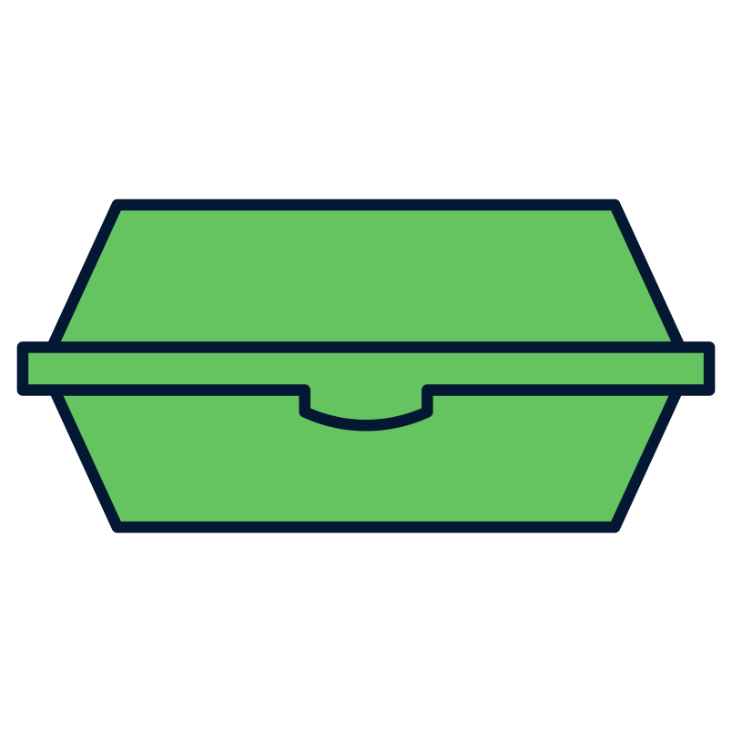
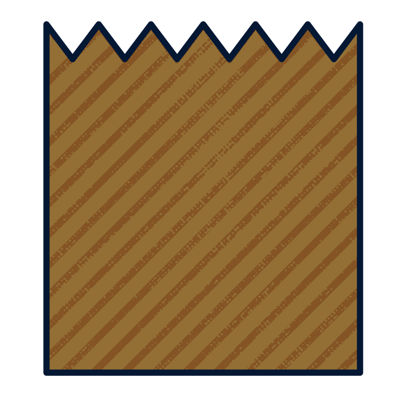

Leadin. Something to draw the reader in. Graphics is the only visuals and words desk at the Spectator.
Nutgraf. What is the meat of the story? Why does this matter?
Disposal and container options in Columbia and Barnard dining halls
Click the pins on the map below to see which options are available at each dining hall.
An opaque icon indicates that the option exists at the dining hall, while a translucent icon indicates that it does not.
Key
Disposal options
Trash Bin
Recycling Bin
Compost Bin
Server/Platter
Conveyor Belt
Container options
Ceramic

Eco-container
To-go container

Paper
Plastic
Charlotte Li is a Graphics deputy editor. She can be contacted at charlotte.li@columbiaspectator.com.
Jun Yi Zhang is a Graphics reporter. She can be contacted at junyi.zhang@columbiaspectator.com.